EP1000 Module Updates
Computer Aided Design
Raster Graphics
I learnt to use a raster graphics tool, GIMP to edit my photo. I was able to remove the background of the image and subsitute it with a scenic image. It was achieved using the selection tool to isolate myself from the original image and the selected area was feathered.
Here are the orignal image and edited image as well as screenshot of the GIMP workspace.


Vector Graphics
Next, I learnt to use a vector graphics tool, Inkscape to create a vector image of a cat. It was done using the Bezier drawing tool to outline the cat in the original photo. Finally, a colour was added to complete the simple cat silhouette.
Take a look at the simple vector art I created as well as a screenshot of the Inkscape interface.


3D Modelling
Basically, I learnt to create 3D models on Fusion 360.
Key chain name tag
| 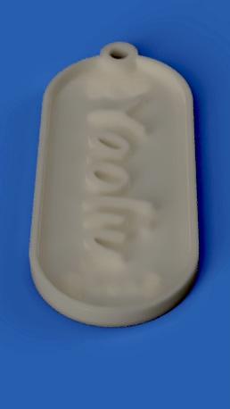 |
{kind=link}
Breakdown of the name tag:
a. A 2-point rectangle with rounded sides is first created as the base of the name tag.
b. A rim is created around the edges by sketch and extrusion.
c. Then, a key-ring hole is made by creating a sketch, join extrusions and cut extrusions.
d. To create the embossed name on the base, the texts are typed out and extruded upwards. This sums up the simple name tag modelling process.
TIP!
If you are modelling your name tag, you could actually type emojis onto your name tag! I found some cool emojis here , however they may not be compatible with all font types. If the emoji you copied and paste does not look the same as the original, change to a font that can produce the emoji.
Lego
| 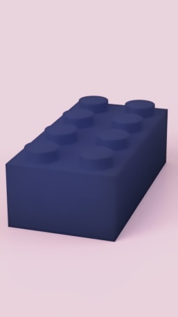 |
{kind=link}
Breakdown of the lego:
a. A 2-point rectangle is first drawn and extruded to form a cuboid of the standard lego dimension, according to a Youtube video by Kevin Kennedy.
b. Next, a circle is sketched on the top of the cuboid at one corner and join extruded to create the first bump of the lego.
c. Using the rectangular pattern command, the circular bump feature is duplicated 3 times across one side length of the top of the rectangular object. A pattern has been created on one half of the rectangle.
The first pattern is duplicated once to create the same 4 bumps on the other top half of the rectangle.
d. The bottom of the cuboid is then hollowed out using the 'shell' tool.
e. A circular brim is then created in the hollowed side to make one of those centre collumns underneath legos that make them attach to one another. It was also created by sketch and extrusion.
f. A rectangular pattern command is used to duplicate the circular extrude 2 times along the length of rectangle, resulting in 3 centre collumns.
g. Finally, 2mm-fillets are created on the outer edges of the lego.
TIP!
If you have also done the lego, go to Solid > Modify > Appearance to add a material type and colour to your lego. Lastly, switch from the design interface to the render interface (at the top left of Fusion360) and render your lego as a photorealistic-looking image file.
Hex nut
| 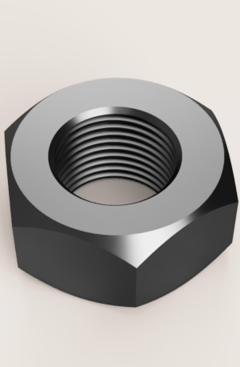 |
{kind=link}
Breakdown of the hex nut:
a. A hexagon is first sketched on the XY plane and extruded upward to creade a body of 10mm height.
b. In front view, a small triangle is sketched inside the top right corner (could be left too). Using the Z-axis as the rotation axis, the triangle is revolve-cut to create the hex nut shape.
c. The revolve-cut feature is mirrored over a plane placed along the centre, 5mm above the XY plane.
d. A countercunk tapped hole of size 12mm is created in the centre of the hexagon. The thread type is GB metric profile and designation is M12x1. Hex nut is competed.
TIP!
Use 'project geometry' to project previous sketches to be come visible in a new sketch!
Knight chess piece
| 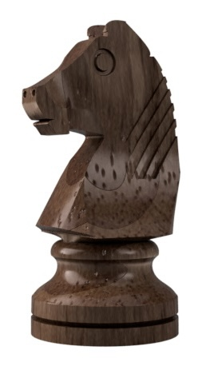 |
{kind=link}
Breakdown of the knight piece:
a. A knight chess piece side view sample sotck image is downloaded. Here you will find the image example of the knight. The JPG file is then imported to Fusion360 as the reference photo for the knight.
b. The profile outline of the knight is sketched using spline command.
c. The base of the knight is a circular solid created using revolve command and the rest of the knight sketch is extruded to create a body.
d. More extrusions are made to cut away parts to make the knight's body gradually slope outward from the head down, like a real knight piece which should be thicker down and smaller at its top.
e. Loft cut tool is used to create concaves on the side of the knights snout. More extrusions are made to shape the nose.
f. A nosetril hole is made by creating a sphere and after placing it at the certain location, is join-cut from the knight's nose.
g. A certain triangle is extruded from the top of the knight's head to create a pointy ear.
h. To create the engraved stripes on the side of the knight, a pipe is created to certain length and width, and extruded outwards. The feature is duplicated across the knight's side at a certain slant to create the stripes. It is done using pattern on path. The join-cut command is then used to remove the pipes and the engravement is done.
i. The mirror command is used to mirror the half-body knight and now the knight's upper body is completed where both sides are identical.
j. The lower body of the knight is rounded by using loft with intersect and tangent edge selected after some sketches done.
k. Since the knight was modelled to a rather small scale due to the small sized canvas/referenceimage, it is finally scaled to a size of the average real life knight chess piece.
You can definitely learn a lot about 3D drawing in Fusion360 and master it by watching some advanced tutorials on Youtube. I would never have thought this knight is possible if I hadn't learnt so many tricks from this video. I think all we need to do is to have a clear picture of what we want to model, and to look from all angles at the possibilities to model it in order to learn about the usefulness of all the different commands in Fusion360. We should really be experimenting a lot with the different commands and just search on Youtube when we have doubts. If you find a good timelapse video, just lower the playback speed in the settings.
AirPod
| 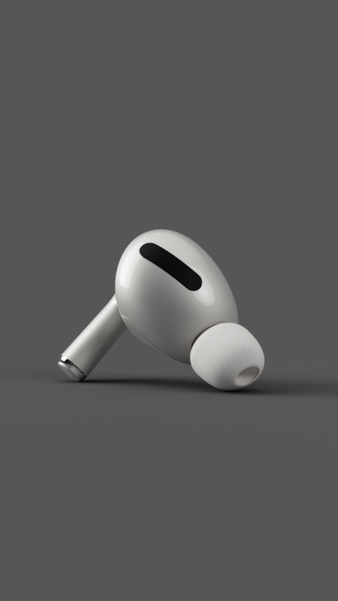 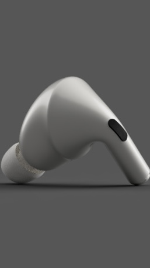 |
{kind=link}
{kind=link}
Breakdown of the AirPod:
I chose to create this AirPod model as the individual assignment given by my lecturer. I thought it satisfies the selection criteria as a small object that cannot be made subtractively or by conventional manufacturing methods.
While doing this assignment, I referred to a Youtube video and learnt to use many commands extensively, sucah as the loft, extrude and joint commands. I also learnt to create components for better work organisation.
Music box
Breakdown of the music box:
1. A rectangle of length = 78mm and width = 54mm is sketched and extruded to a height of 3mm (desired plywood thickness).
2. Tabs are created by first sketching 2 small rectangle on the surface of the plank's length.
The length of both rectangles are the same and dimensioned by using the formula: length tab = length / ( ( number of tabs along length * 2 ) + 1 ).
3. The 2nd rectangle is cut-extruded inwards and a tab is formed. The tab is duplicated along the plank's length by using the rectangular pattern command.
The formula for rectangular pattern distance is length - ( Length of tab * 3 ).
{kind=link}
4. Next, The back side of the box is created by first sketching a rectangle on that plane and extruding it inwards to a distance of 3mm.
{kind=link}
5. To split the two solids into individual body parts, the combine tool is used to split them by using cut mode.
{kind=link}
6. Tabs are created along the plank's lower width by repeating steps 2 & 3 but the formulae for the width tab and rectangular pattern distance are different. Width tab = width / ( ( number of tabs along width * 2 ) + 1 ), rectangular pattern distance = width - ( Length of tab * 3 )
{kind=link}
{kind=link}
7. A rectangle is drawn on the left side and extruded inwards to a thickness of 3mm to create the side wall.
{kind=link}
8. Tabs are along the top of the front wall by first sketching 2 small rectangle on the surface of the plank's length. The length of both rectangles are the same and dimensioned by using the formula: length tab = length / ( ( number of tabs along length * 2 ) + 1 ).
{kind=link}
9. Tabs are created along the plank's upper width by repeating steps 2 & 3 but the formulae for the width tab and rectangular pattern distance are different. Width tab = width / ( ( number of tabs along width * 2 ) + 1 ), rectangular pattern distance = width - ( Length of tab * 3 )
{kind=link}
10. Next, the front wall (length) is mirrored. Mirror planes are created by constructing planes.
{kind=link}
11. A slidable cover is made at the right side by extruding a rectangular sketch of 3mm thickness to same height.
{kind=link}
{kind=link}
12. A rectangle is drawn over the top and extruded to 3mm thickness to form the top wall (ceiling) of the box.
{kind=link}
13. A slot is sketched and extruded in the cover to create an opening as well as a part of a small handle. The handle is extruded outwards to 2mm length and the left & right edges are filleted.
{kind=link}
{kind=link}
{kind=link}
14. The comine > split tool is used to split the handle and cover into their individual bodies.
{kind=link}
15. A second lid is created inside the box to cover the 'real' music box and allowing a small room to exist in the box. A hole is extruded through the lid for the sound from the music box to pass through
{kind=link}
{kind=link}
16. A sketch is created on the left side of the box and extrude > cut for the crank shaft of the music box to stick out.
{kind=link}
{kind=link}
17. The music box model is finished and ready to be exported to DXFs for laser-cutting.
3D Printing
After all the CAD involving 3D modelling, it's time to dive straight into fabrication and so I 3d printed some of the models made with Fusion360. Using Ultimaker Cura as my preferred slicer, I applied the information learnt in class to experiment with 3D printing and obtain the desired print results.
3D-printed key chain name tag
{kind=link}
Printer used: Cubicon Style
How it's made:
a. The CAD of the name tag is exported into an STL file from Fusion360.
b. The STL file is imported into the Ultimaker Cura slicer and sliced using the following custom settings:
• Layer height: 0.1mm
• Infill density: 30%
• Infill pattern: Grid
• Build plate adhesion type: skirt
The small layer height of 0.1 mm was meant to produce a finer print with good resolution and smoothness.
The purpose of a higher-than-average infill of 30% was to make the print relatively stronger given it is a very thin piece of name tag.
The infill pattern I selected is the grid, as will be for all my 3D prints because grid pattern typically offers greater print strength.
Knowing that the 3D printer that I use - Cubicon Style - has specially coated heating bed which allows easily detachable prints, I chose to apply skirt as the build plate adhesion type instead of brim or raft.
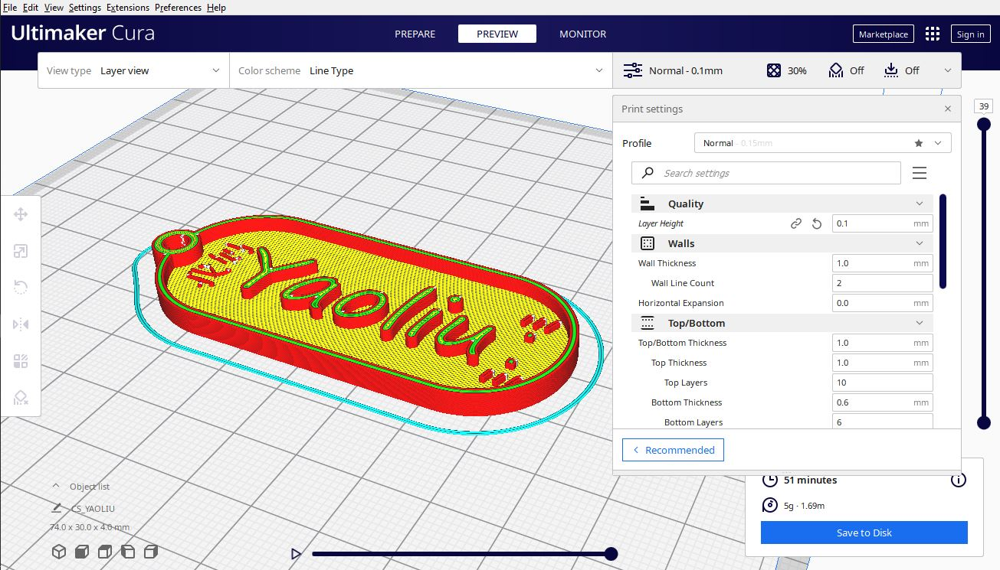
c. As a standard procedure, the sliced g-code is then renamed to a HVS file to be transferred to the Cubicon Style printer via SD card. After about an hour, the print is done.
{kind=link}
3D-printed knight chess piece
{kind=link}
Printer used: Cubicon Style
How it's made:
a. The CAD of the knight is exported into an STL file from Fusion360.
b. The STL file is imported into the Ultimaker Cura slicer and sliced using the following custom settings:
• Layer height: 0.075mm
• Infill density: 25%
• Infill pattern: Grid
• Support: Yes
• Build plate adhesion type: skirt
The small layer height of 0.075 mm was meant to produce a very fine print with high resolution and nice smoothness.
The average infill amount of 25% was to give the print average strength.
As there were overhangs in the model to be printed, support was enabled for all 50° overhangs.
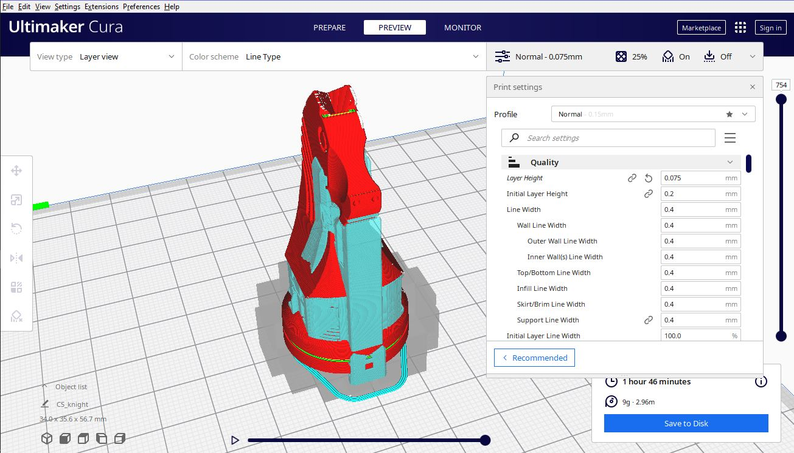
c. After about 2 hours, the print is done.
{kind=link}
e. The supports and residues were removed using a flush cutter and the knight's surface was smoothened to taste using sand paper ranging from course to the finest type. Now the knight is completed.
{kind=link}
3D-printed AirPod
{kind=link}
{kind=link}
Printer used: Prusa i3 MK3S
How it's made:
a. The CAD of the AirPod is exported into an STL file from Fusion360.
b. The STL file is imported into the Ultimaker Cura slicer and sliced using the following custom settings:
• Layer height: 0.075mm
• Infill density: 25%
• Infill pattern: Grid
• Support: Yes
• Build plate adhesion type: skirt
As I intended to print a good-looking airpod with smooth surfaces, I selected a small layer height of 0.075 mm.
The average infill amount of 25% was to give the print average strength. The part of the AirPod that looks like a cylindrical rod is rather thin and is fragile, so 25% infill is optimal.
There were overhangs in this model, so support was enabled for all 50° overhangs.
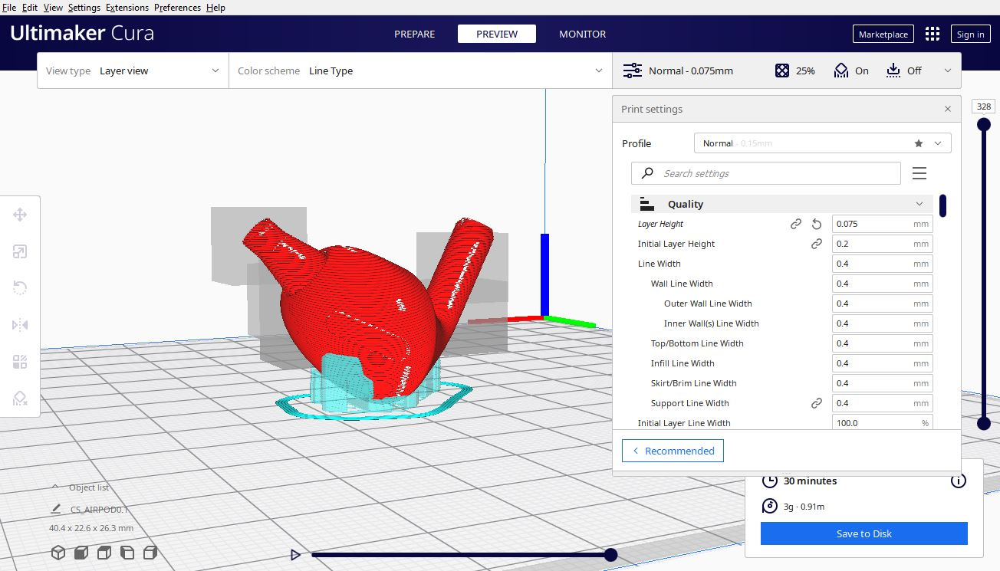
c. After about 30 minutes, the print is done.
{kind=link}
e. For the AirPod print, I applied acrylic paint on it to make it look slightly better.
Laser-cutting
As part of the EP1000 module components, I had to laser-cut a music box of my own design.
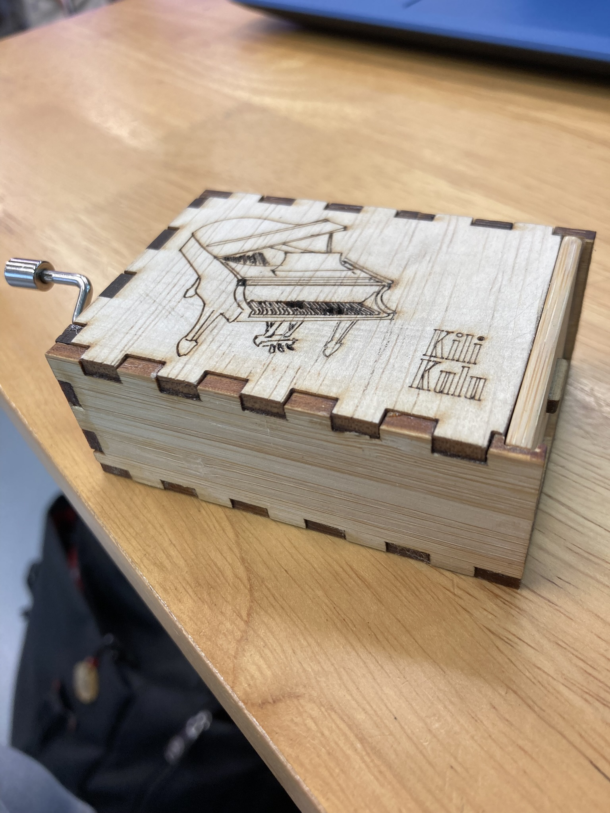 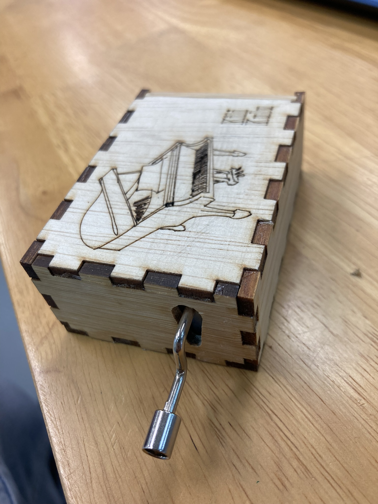
{kind=link}
{kind=link}
Laser Cutter used: LC-Universal660
How it's done:
The Fusion360 music box model is converted into a dxf drawing file to be prepared for laser cutting. In Fusion360, every of the individual parts are projected as a sketch and saved as a DXF file.
The DXF files are imported into Inkscape and arranged.
The lineweight of every line is made to be hairline and their colour is red. It is done in the Fill and Stroke tab.
I wanted to engrave the words 'Always with me' on the front of the inner lid of the music box so I typed the words in Inkscape and changed the stroke fill to RGB green for vector engraving.
It is scaled to a desired size and positioned on the lower right corner of the front wall to be laser cut.
Next, I wanted to create a music box with a 'Spirited Away' theme so as to match the song of the music box I got, so I took a cartoon image of a 'No Face' from google:

Here's the link to the author's site: Spirited Away: No Face Chibi
I downloaded a transparent png of the picture and converted it into grayscale using Window's Photos app. Then I imported it to Inkscape and prepared it alongside the music box layout for laser-cutting.
{kind=link}
The fill is changed to RGB green colour for engraving.
The drawing is exported to an SVG file and is ready to be laser cut.
Embedded Systems
EP1000 Certifications
FabLab Safety Assessment 2022 score: 85%
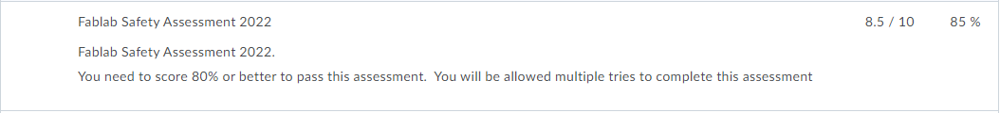{kind=link}
3D Printer Certification Quiz score: 90%
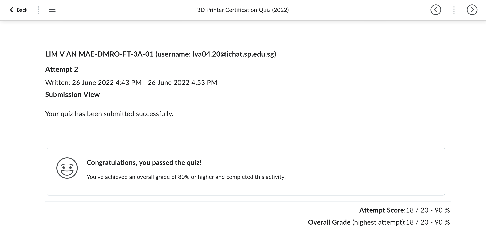{kind=link}
Laser Cutter Certification Quiz score: 90%
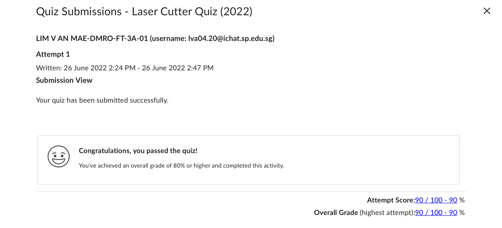{kind=link}